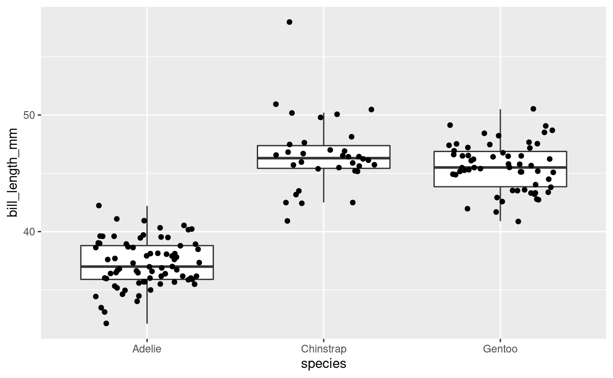
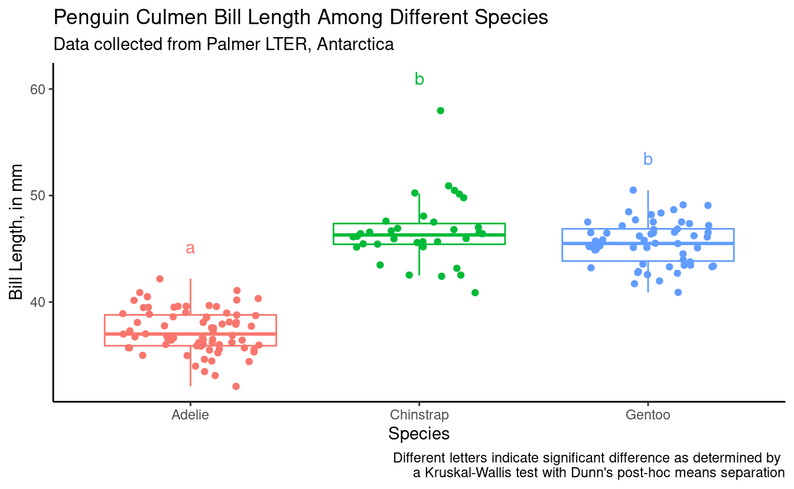

S03E04: ANOVA 2
Testing assumptions, non-parametric ANOVA, utilizing the R output, and üêß
 Artwork by @allison_horst
Artwork by @allison_horst
Prep homework
Basic computer setup
-
If you didn’t already do this, please follow the Code Club Computer Setup instructions, which also has pointers for if you’re new to R or RStudio.
-
If you’re able to do so, please open RStudio a bit before Code Club starts – and in case you run into issues, please join the Zoom call early and we’ll help you troubleshoot.
New to ggplot?
This isn’t a ggplot specific session, though we will be using it a bit. Check out the past Code Club sessions covering ggplot2:
- S01E04: intro to ggplot2
- S01E05: intro to ggplot2 round 2
- S01E10: faceting and animating
- S02E06: another intro to ggplot2
- S02E07: a second intro to ggplot2 round 2
- S02E08: combining plots using faceting
- S02E09: combining plots using faceting and patchwork
- S02E10: adding statistics to plots
- S02E11: making interactive plots with plotly
If you’ve never used ggplot2 before (or even if you have), you may find this cheat sheet useful.
Adding statistics to plots
We had a previous session S02E10 developed by Daniel Quiroz that covers the package ggpubr and adding statistics to ggplots.
We already did t-tests and ANOVA part 1
Mike Sovic covered in code club S03E01 how to run t-tests in R. I covered ANOVA two weeks ago S03E02 and we will be building off that session today.
Getting an R Markdown
Click here to get an Rmd (optional)
RMarkdown for today
# directory
dir.create("S03E04")
# directory for our RMarkdown
# ("recursive" to create two levels at once.)
dir.create("S03E04/Rmd/")
# save the url location for today's script
todays_Rmd <-
"https://raw.githubusercontent.com/biodash/biodash.github.io/master/content/codeclub/S03E04_anova2/anova2.Rmd"
# indicate the name of the new Rmd
S03E04_Rmd <- "S03E04/Rmd/S03E04_anova2.Rmd"
# go get that file!
download.file(url = todays_Rmd,
destfile = S03E04_Rmd)Introduction
We have gone through a first pass of running ANOVAs in Code Club a couple weeks ago but didn’t have the time to go through all of the content. We are going to re-visit that material today.
Often people are first introduced to the R programming language when they are wanting to conduct statistical analyses. My experience is that beginners are often able to conduct the analysis they want, and print their results to the console. But, the process of locating and then using the output of their analysis tends to be more complex.
Today, we are going to go over how to:
- test if our data is suitable for running ANOVA
- run an ANOVA (parametric) or Kruskal Wallis (non-parametric) test
- run posthoc tests to understand group differences
- use the ANOVA data output object as a means to understand R data structure.
If you are looking for a good statistics class, I would recommend Dr.¬†Kristin Mercer’s HCS 8887 Experimental Design.
Load packages, get data
We are going to start with our favorite dataset palmerpenguins to provide the input data for our analysis.
If you don’t have any of the packages below, use install.packages() to download them.
library(tidyverse)
library(palmerpenguins) # for data
library(rstatix) # for testing assumptions and running tests
library(agricolae) # for post-hoc comparison of groups1 - Getting acclimated
Some words on syntax: the dataset penguins is an object within the palmerpenguins package. If you call the object penguins (after executing library(palmerpenguins)), you will be able to see what is contained within that dataframe.
penguins
#> # A tibble: 344 × 8
#> species island bill_length_mm bill_depth_mm flipper_length_mm body_mass_g
#> <fct> <fct> <dbl> <dbl> <int> <int>
#> 1 Adelie Torgersen 39.1 18.7 181 3750
#> 2 Adelie Torgersen 39.5 17.4 186 3800
#> 3 Adelie Torgersen 40.3 18 195 3250
#> 4 Adelie Torgersen NA NA NA NA
#> 5 Adelie Torgersen 36.7 19.3 193 3450
#> 6 Adelie Torgersen 39.3 20.6 190 3650
#> 7 Adelie Torgersen 38.9 17.8 181 3625
#> 8 Adelie Torgersen 39.2 19.6 195 4675
#> 9 Adelie Torgersen 34.1 18.1 193 3475
#> 10 Adelie Torgersen 42 20.2 190 4250
#> # … with 334 more rows, and 2 more variables: sex <fct>, year <int>However, penguins will not be in your environment tab because it is not in your local environment. You can use it without it being in your local environment, but if you are bothered by this, you can save a copy in your local environment such it shows up in that top right pane.
penguins <- penguinsWhat is within this dataset?
glimpse(penguins)
#> Rows: 344
#> Columns: 8
#> $ species <fct> Adelie, Adelie, Adelie, Adelie, Adelie, Adelie, Adel…
#> $ island <fct> Torgersen, Torgersen, Torgersen, Torgersen, Torgerse…
#> $ bill_length_mm <dbl> 39.1, 39.5, 40.3, NA, 36.7, 39.3, 38.9, 39.2, 34.1, …
#> $ bill_depth_mm <dbl> 18.7, 17.4, 18.0, NA, 19.3, 20.6, 17.8, 19.6, 18.1, …
#> $ flipper_length_mm <int> 181, 186, 195, NA, 193, 190, 181, 195, 193, 190, 186…
#> $ body_mass_g <int> 3750, 3800, 3250, NA, 3450, 3650, 3625, 4675, 3475, …
#> $ sex <fct> male, female, female, NA, female, male, female, male…
#> $ year <int> 2007, 2007, 2007, 2007, 2007, 2007, 2007, 2007, 2007…

Illustration by Allison Horst
2. Testing assumptions
I’d be remiss if I didn’t show you how to test that you aren’t violating any of the assumptions needed to conduct an ANOVA. We went over this a little bit back in the session put together by Daniel Quiroz on ggpubr and adding statistical results to ggplots.
Briefly, in order to use parametric procedures (like ANOVA), we need to be sure our data meets the assumptions for 1) normality and 2) constant variance. This can be done in a few different ways.

Illustration by Allison Horst
Shapiro-Wilk test for normality
We are going to use the Shapiro-Wilk test (using the function shapiro_test() which is in the package rstatix to determine normality, but will do it groupwise. This function is a pipe-friendly wrapper for the function shapiro.test(), which just means you can use it with pipes.
Our question is:
- Does
bill_length_mmvary byspeciesin female penguins?

penguins %>%
filter(sex == "female") %>%
drop_na() %>%
group_by(species) %>%
count()
#> # A tibble: 3 × 2
#> # Groups: species [3]
#> species n
#> <fct> <int>
#> 1 Adelie 73
#> 2 Chinstrap 34
#> 3 Gentoo 58# testing for all female penguins together
penguins %>%
filter(sex == "female") %>%
drop_na() %>%
rstatix::shapiro_test(bill_length_mm)
#> # A tibble: 1 × 3
#> variable statistic p
#> <chr> <dbl> <dbl>
#> 1 bill_length_mm 0.950 0.0000140
# testing by species
penguins %>%
drop_na() %>%
filter(sex == "female") %>%
group_by(species) %>%
rstatix::shapiro_test(bill_length_mm)
#> # A tibble: 3 × 4
#> species variable statistic p
#> <fct> <chr> <dbl> <dbl>
#> 1 Adelie bill_length_mm 0.991 0.895
#> 2 Chinstrap bill_length_mm 0.883 0.00170
#> 3 Gentoo bill_length_mm 0.989 0.895Note that if we test all the penguins together, it looks like we do not have normal data. If we test by species, we see that two speces have normal data distribution and one (Chinstrap) does not.
Can we visualize normality in another way?
Let’s quickly make a new dataframe that includes only the female penguins, and drop missing values, so that we don’t have to keep including the filter() and drop_na() statements.
Visualizing with a histogram by species.
female_penguins %>%
ggplot(aes(x = bill_length_mm)) +
geom_histogram() +
facet_grid(cols = vars(species))
#> `stat_bin()` using `bins = 30`. Pick better value with `binwidth`.

We can see here too that the Chinstrap penguins look maybe not that normal (and we saw earlier they have the fewest numbers of observations). This is consistent with the results from the Shapiro test.
Log transforming
Would our data look more normal if we log transformed it? Let’s see. We can use the function mutate() to create a new column called bill_length_mm_log2 which will have the data from bill_length_mm but log transformed using base 2 (using the base R function log2()).

Illustration by Allison Horst
The syntax of mutate() is like this:
mutate(new_variable = function(existing_variable))
Testing using shapiro_test() again.
log_female_penguins %>%
# don't need drop_na() because we already did that
group_by(species) %>%
shapiro_test(bill_length_mm_log2)
#> # A tibble: 3 × 4
#> species variable statistic p
#> <fct> <chr> <dbl> <dbl>
#> 1 Adelie bill_length_mm_log2 0.991 0.868
#> 2 Chinstrap bill_length_mm_log2 0.911 0.00900
#> 3 Gentoo bill_length_mm_log2 0.988 0.841Still not passing the test for normality. Let’s still look at this visually.
log_female_penguins %>%
ggplot(aes(x = bill_length_mm_log2)) +
geom_histogram() +
facet_grid(cols = vars(species))
#> `stat_bin()` using `bins = 30`. Pick better value with `binwidth`.
Doesn’t look very different from the non-log2 transformed data. Ok, well we tried.
Equal variance
We can test for equal variance using Levene’s test, levene_test() which is part of the rstatix package. Again, this is a pipe-friendly wrapper for the function levene.test().
female_penguins %>%
levene_test(bill_length_mm ~ species)
#> # A tibble: 1 × 4
#> df1 df2 statistic p
#> <int> <int> <dbl> <dbl>
#> 1 2 162 0.819 0.442Our data meets the assumption for equal variance, but not for normality, so we will need to be sure to select a test that does not have an assumption of normality.
3. Kruskal Wallis test
The Kruskal Wallis test is the non-parametric version of a one-way ANOVA. This non-parametric test tests whether samples are coming from the same distribution, but uses ranks instead of means.
We want to see if there are any differences in bill length (bill_length_mm) in penguins by species. Since our data violates the assumptions of normality, we should do this using a test that does not require normality, and we can use the Kruskal Wallis test. The Kruskal-Wallis test, can be run using the rstatix function kruskal_test().
First let’s get some descriptive information about our data.
female_penguins %>%
group_by(species) %>%
count()
#> # A tibble: 3 × 2
#> # Groups: species [3]
#> species n
#> <fct> <int>
#> 1 Adelie 73
#> 2 Chinstrap 34
#> 3 Gentoo 58If we want to learn more about the function kruskal_test() we can do so using the code below. The help documentation will show up in the bottom right quadrant of your RStudio.
?kruskal_test()We can run a Kruskal-Wallis test by indicating our model.
bill_length_kruskal <- female_penguins %>%
kruskal_test(bill_length_mm ~ species)The function kruskal_test() already puts the output of the function into a tidy format, so we can simply view it.
View(bill_length_kruskal)| .y. | n | statistic | df | p | method |
|---|---|---|---|---|---|
| bill_length_mm | 165 | 121.6214 | 2 | 0 | Kruskal-Wallis |
We can also look at our data visually by plotting it, as below.
female_penguins %>%
ggplot(aes(x = species, y = bill_length_mm)) +
geom_boxplot(outlier.shape = NA) +
geom_jitter(width = 0.3)
Breakout rooms 1
We want to know if there are any significant differences in bill_depth_mm by species in male penguins.
Exercise 1
Test your assumptions for normality to determine what would be the appropriate test to do to assess means separation.
Hints (click here)
Use the function shapiro_test() to test normality. If your data is non-normal, you can check to see if log transforming it makes it normal.
Solutions (click here)
Shapiro-Wilk Test# create df with male penguins and no NAs
male_penguins <- penguins %>%
filter(sex == "male") %>%
drop_na()# run shapiro test
male_penguins %>%
group_by(species) %>%
rstatix::shapiro_test(bill_depth_mm)
#> # A tibble: 3 × 4
#> species variable statistic p
#> <fct> <chr> <dbl> <dbl>
#> 1 Adelie bill_depth_mm 0.964 0.0335
#> 2 Chinstrap bill_depth_mm 0.983 0.863
#> 3 Gentoo bill_depth_mm 0.980 0.401Visualize
male_penguins %>%
ggplot(aes(x = bill_depth_mm)) +
geom_histogram() +
facet_grid(cols = vars(species))
#> `stat_bin()` using `bins = 30`. Pick better value with `binwidth`.
See if log-transforming your data would allow you to use parametric tests.
Testing using shapiro_test() again.
log_male_penguins %>%
# don't need drop_na() because we already did that
group_by(species) %>%
shapiro_test(bill_depth_mm_log2)
#> # A tibble: 3 × 4
#> species variable statistic p
#> <fct> <chr> <dbl> <dbl>
#> 1 Adelie bill_depth_mm_log2 0.971 0.0914
#> 2 Chinstrap bill_depth_mm_log2 0.981 0.814
#> 3 Gentoo bill_depth_mm_log2 0.980 0.438Ok! We could use log2 transformed data
Visualize.
log_male_penguins %>%
ggplot(aes(x = bill_depth_mm_log2)) +
geom_histogram() +
facet_grid(cols = vars(species))
#> `stat_bin()` using `bins = 30`. Pick better value with `binwidth`.
Exercise 2
Test your assumptions for equal variance to determine what would be the appropriate test to do to assess means separation.
Hints (click here)
«««< HEAD
You can use the function levene_test() to test for equal variance.
======= You can use the function [`levene_test()`](https://rpkgs.datanovia.com/rstatix/reference/levene_test.html) to test for equal variance.
>>>>>>> b4836320d0dbe7b28303489c3f695280e6d0c2a2
Solutions (click here)
Equal variancemale_penguins %>%
levene_test(bill_depth_mm ~ species)
#> # A tibble: 1 × 4
#> df1 df2 statistic p
#> <int> <int> <dbl> <dbl>
#> 1 2 165 2.30 0.103Exercise 3
Conduct your Kruskal-Wallis test or ANOVA to see if there is any overall significant effect of species on bill_depth_mm of male penguins.
Hints (click here)
Review the information in section 3 of this post. You could also use the package ggpubr.
Solutions (click here)
Kruskal-Wallisbill_depth_kruskal <- male_penguins %>%
kruskal_test(bill_depth_mm ~ species)View(bill_depth_kruskal)| .y. | n | statistic | df | p | method |
|---|---|---|---|---|---|
| bill_depth_mm | 168 | 116.152 | 2 | 0 | Kruskal-Wallis |
ANOVA - to use this you need to be using normal data (here, the log transformed data).
bill_depth_anova <-
aov(data = log_male_penguins,
formula = bill_depth_mm_log2 ~ species)summary(bill_depth_anova)
#> Df Sum Sq Mean Sq F value Pr(>F)
#> species 2 3.1221 1.5610 319.8 <2e-16 ***
#> Residuals 165 0.8053 0.0049
#> ---
#> Signif. codes: 0 '***' 0.001 '**' 0.01 '*' 0.05 '.' 0.1 ' ' 14. Posthoc group analysis
Now that we’ve seen that species are significant effectors of bill_length_mm, our next logical question might be, which species specifically are different from each other? We can determine this by conducting a post-hoc test. We will do our post-hoc analysis using Dunn’s test (which is for specifically ranked data) and the function dunn_test() which is a part of rstatix. In the example below, we are using the Benjamini Hochberg method of pvalue adjustment for multiple corrections.
dunn_bill_length <- female_penguins %>%
dunn_test(bill_length_mm ~ species,
p.adjust.method = "BH") # there are others tooLike we did with t-tests, you can also look at the resulting dunn_test() object (here, dunn_bill_length) in your environment pane.
View(dunn_bill_length)| .y. | group1 | group2 | n1 | n2 | statistic | p | p.adj | p.adj.signif |
|---|---|---|---|---|---|---|---|---|
| bill_length_mm | Adelie | Chinstrap | 73 | 34 | 8.8609532 | 0.0000000 | 0.0000000 | **** |
| bill_length_mm | Adelie | Gentoo | 73 | 58 | 9.4096815 | 0.0000000 | 0.0000000 | **** |
| bill_length_mm | Chinstrap | Gentoo | 34 | 58 | -0.8549426 | 0.3925829 | 0.3925829 | ns |
From this result, we can see that Adelie is significantly different than Chinstrap and Gentoo, but Chinstrap and Gentoo are not significantly different from each other.
The structure of this resulting object dunn_bill_length can be determined using the code below.
str(dunn_bill_length)
#> rstatix_test [3 × 9] (S3: rstatix_test/dunn_test/tbl_df/tbl/data.frame)
#> $ .y. : chr [1:3] "bill_length_mm" "bill_length_mm" "bill_length_mm"
#> $ group1 : chr [1:3] "Adelie" "Adelie" "Chinstrap"
#> $ group2 : chr [1:3] "Chinstrap" "Gentoo" "Gentoo"
#> $ n1 : Named int [1:3] 73 73 34
#> ..- attr(*, "names")= chr [1:3] "Adelie" "Adelie" "Chinstrap"
#> $ n2 : Named int [1:3] 34 58 58
#> ..- attr(*, "names")= chr [1:3] "Chinstrap" "Gentoo" "Gentoo"
#> $ statistic : num [1:3] 8.861 9.41 -0.855
#> $ p : num [1:3] 7.93e-19 4.98e-21 3.93e-01
#> $ p.adj : num [1:3] 1.19e-18 1.49e-20 3.93e-01
#> $ p.adj.signif: chr [1:3] "****" "****" "ns"
#> - attr(*, "na.action")= 'omit' Named int 3
#> ..- attr(*, "names")= chr "3"
#> - attr(*, "args")=List of 5
#> ..$ data : tibble [165 × 8] (S3: tbl_df/tbl/data.frame)
#> .. ..$ species : Factor w/ 3 levels "Adelie","Chinstrap",..: 1 1 1 1 1 1 1 1 1 1 ...
#> .. ..$ island : Factor w/ 3 levels "Biscoe","Dream",..: 3 3 3 3 3 3 3 3 1 1 ...
#> .. ..$ bill_length_mm : num [1:165] 39.5 40.3 36.7 38.9 41.1 36.6 38.7 34.4 37.8 35.9 ...
#> .. ..$ bill_depth_mm : num [1:165] 17.4 18 19.3 17.8 17.6 17.8 19 18.4 18.3 19.2 ...
#> .. ..$ flipper_length_mm: int [1:165] 186 195 193 181 182 185 195 184 174 189 ...
#> .. ..$ body_mass_g : int [1:165] 3800 3250 3450 3625 3200 3700 3450 3325 3400 3800 ...
#> .. ..$ sex : Factor w/ 2 levels "female","male": 1 1 1 1 1 1 1 1 1 1 ...
#> .. ..$ year : int [1:165] 2007 2007 2007 2007 2007 2007 2007 2007 2007 2007 ...
#> ..$ formula :Class 'formula' language bill_length_mm ~ species
<<<<<<< HEAD
#> .. .. ..- attr(*, ".Environment")=<environment: 0x55a775e9b4b8>
=======
#> .. .. ..- attr(*, ".Environment")=<environment: 0x7fb80d5a2188>
>>>>>>> b4836320d0dbe7b28303489c3f695280e6d0c2a2
#> ..$ p.adjust.method: chr "BH"
#> ..$ detailed : logi FALSE
#> ..$ method : chr "dunn_test"This df does not have a ‘groups’ column, but if we want to plot in the same way, we can make a new object which we use for plotting. I’m going to show you here how to do this manually.
dunn_for_plotting <- data.frame(species = c("Adelie", "Chinstrap", "Gentoo"),
groups = c("a", "b", "b"))5. Bringing it together in a plot
We already looked at a first-pass plot, but let’s customize it now, and add our statistical info. Here is our base plot.
female_penguins %>%
ggplot(aes(x = species, y = bill_length_mm)) +
geom_boxplot(outlier.shape = NA) +
geom_jitter(width = 0.3)

First let’s make the plot more aesthetically pleasing.
(bill_length_plot <- female_penguins %>%
ggplot(aes(x = species, y = bill_length_mm, color = species)) +
geom_boxplot(outlier.shape = NA) +
geom_jitter(width = 0.3) +
theme_classic() +
theme(legend.position = "none") + # remove legend bc we don't need it
labs(x = "Species",
y = "Bill Length, in mm",
title = "Penguin Culmen Bill Length Among Different Species",
subtitle = "Data collected from Palmer LTER, Antarctica"))
We want to add the letters to this plot, so we can tell which groups of species by sex are significantly different. We are going to figure out what the maximum bill_length_mm for each species by sex is, so it will help us determine where to put our letter labels. Then, we cna add our labels to be higher than the largest data point.
bill_length_max <- female_penguins %>%
group_by(species) %>%
summarize(max_bill_length_mm = max(bill_length_mm))
bill_length_max
#> # A tibble: 3 × 2
#> species max_bill_length_mm
#> <fct> <dbl>
#> 1 Adelie 42.2
#> 2 Chinstrap 58
#> 3 Gentoo 50.5Let’s add our bill_length_max back to the df with our post-hoc groups dunn_for_plotting.
bill_for_plotting <- full_join(dunn_for_plotting, bill_length_max,
by = "species")
bill_for_plotting
#> species groups max_bill_length_mm
#> 1 Adelie a 42.2
#> 2 Chinstrap b 58.0
#> 3 Gentoo b 50.5Let’s plot.
bill_length_plot +
geom_text(data = bill_for_plotting,
aes(x = species,
y = 3 + max_bill_length_mm,
color = species,
label = groups)) +
labs(caption = "Different letters indicate significant difference as determined by \na Kruskal-Wallis test with Dunn's post-hoc means separation")

Also remember Daniel showed us how we can do somthing similar using the package ggpubr.
Breakout rooms 2
Exercise 4
Conduct a post-hoc analysis to understand which male penguin species have significantly different bill_depth_mm.
Hints (click here)
Using the results from your assumption testing in Exercise 3, pick an appropriate post-hoc test to answer your question.
Solutions (click here)
Dunn's testdunn_bill_depth <- male_penguins %>%
dunn_test(bill_depth_mm ~ species,
p.adjust.method = "BH")View(dunn_bill_depth)| .y. | group1 | group2 | n1 | n2 | statistic | p | p.adj | p.adj.signif |
|---|---|---|---|---|---|---|---|---|
| bill_depth_mm | Adelie | Chinstrap | 73 | 34 | 0.9039517 | 0.366021 | 0.366021 | ns |
| bill_depth_mm | Adelie | Gentoo | 73 | 61 | -9.5885513 | 0.000000 | 0.000000 | **** |
| bill_depth_mm | Chinstrap | Gentoo | 34 | 61 | -8.6487581 | 0.000000 | 0.000000 | **** |
Parametric post-hoc test
bonferroni_bill_depth <- agricolae::LSD.test(bill_depth_anova,
trt = "species",
p.adj = "bonferroni",
console = TRUE)
#>
#> Study: bill_depth_anova ~ "species"
#>
#> LSD t Test for bill_depth_mm_log2
#> P value adjustment method: bonferroni
#>
#> Mean Square Error: 0.004880851
#>
#> species, means and individual ( 95 %) CI
#>
#> bill_depth_mm_log2 std r LCL UCL Min Max
#> Adelie 4.251426 0.07632273 73 4.235282 4.267571 4.087463 4.426265
#> Chinstrap 4.265907 0.05726112 34 4.242250 4.289564 4.129283 4.378512
#> Gentoo 3.972772 0.06803521 61 3.955110 3.990433 3.817623 4.112700
#>
#> Alpha: 0.05 ; DF Error: 165
#> Critical Value of t: 2.418634
#>
#> Groups according to probability of means differences and alpha level( 0.05 )
#>
#> Treatments with the same letter are not significantly different.
#>
#> bill_depth_mm_log2 groups
#> Chinstrap 4.265907 a
#> Adelie 4.251426 a
#> Gentoo 3.972772 bExercise 5
Bring it all together in a plot.
Hints (click here)
Think about what you’d like to display and go back to section 5 for more help.
Solutions (click here)
Using Kruskal-Wallis and Dunn's post-hoc test(bill_depth_plot_kruskal <- male_penguins %>%
ggplot(aes(x = species, y = bill_depth_mm, color = species)) +
geom_boxplot(outlier.shape = NA) +
geom_jitter(width = 0.3) +
theme_classic() +
theme(legend.position = "none") + # remove legend bc we don't need it
labs(x = "Species",
y = "Bill Depth, in mm",
title = "Penguin Culmen Bill Depth Among Different Species",
subtitle = "Data collected from Palmer LTER, Antarctica"))
bill_depth_max <- male_penguins %>%
group_by(species) %>%
summarize(max_bill_depth_mm = max(bill_depth_mm))
bill_depth_max
#> # A tibble: 3 × 2
#> species max_bill_depth_mm
#> <fct> <dbl>
#> 1 Adelie 21.5
#> 2 Chinstrap 20.8
#> 3 Gentoo 17.3View(dunn_bill_depth)| .y. | group1 | group2 | n1 | n2 | statistic | p | p.adj | p.adj.signif |
|---|---|---|---|---|---|---|---|---|
| bill_depth_mm | Adelie | Chinstrap | 73 | 34 | 0.9039517 | 0.366021 | 0.366021 | ns |
| bill_depth_mm | Adelie | Gentoo | 73 | 61 | -9.5885513 | 0.000000 | 0.000000 | **** |
| bill_depth_mm | Chinstrap | Gentoo | 34 | 61 | -8.6487581 | 0.000000 | 0.000000 | **** |
dunn_depth_for_plotting <- data.frame(species = c("Adelie", "Chinstrap", "Gentoo"),
groups = c("a", "a", "b"))
depth_for_plotting_kruskal <- full_join(dunn_depth_for_plotting, bill_depth_max,
by = "species")
depth_for_plotting_kruskal
#> species groups max_bill_depth_mm
#> 1 Adelie a 21.5
#> 2 Chinstrap a 20.8
#> 3 Gentoo b 17.3Let’s plot.
bill_depth_plot_kruskal +
geom_text(data = depth_for_plotting_kruskal,
aes(x = species,
y = 1 + max_bill_depth_mm,
color = species,
label = groups)) +
labs(caption = "Different letters indicate significant difference as determined by \nthe Kruskal Wallis with Dunn's test for post-hoc means separation")
Using ANOVA and Bonferroni post-hoc test
bonferroni_bill_depth$groups
#> bill_depth_mm_log2 groups
#> Chinstrap 4.265907 a
#> Adelie 4.251426 a
#> Gentoo 3.972772 b
bonferroni_bill_depth_plotting <- bonferroni_bill_depth$groups %>%
rownames_to_column(var = "species")
bonferroni_bill_depth_plotting
#> species bill_depth_mm_log2 groups
#> 1 Chinstrap 4.265907 a
#> 2 Adelie 4.251426 a
#> 3 Gentoo 3.972772 bbonferroni_bill_depth_plotting <- full_join(bonferroni_bill_depth_plotting, bill_depth_max,
by = "species")
bonferroni_bill_depth_plotting
#> species bill_depth_mm_log2 groups max_bill_depth_mm
#> 1 Chinstrap 4.265907 a 20.8
#> 2 Adelie 4.251426 a 21.5
#> 3 Gentoo 3.972772 b 17.3(bill_depth_plot_bonf <- male_penguins %>%
ggplot(aes(x = species, y = bill_depth_mm, color = species)) +
geom_boxplot(outlier.shape = NA) +
geom_jitter(width = 0.3) +
geom_text(data = bonferroni_bill_depth_plotting,
aes(x = species,
y = 1 + max_bill_depth_mm,
color = species,
label = groups))) +
theme_classic() +
theme(legend.position = "none") + # remove legend bc we don't need it
labs(x = "Species",
y = "Bill Depth, in mm",
title = "Penguin Culmen Bill Depth Among Different Species",
subtitle = "Data collected from Palmer LTER, Antarctica",
caption = "Different letters indicate significant difference as determined by \none-way ANOVA with Bonferroni post-hoc means separation")